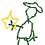
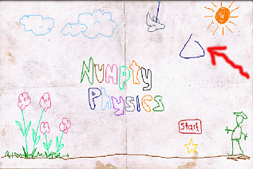

蜡笔物理学是个趣味物理小游戏。
利用力学原理过关。用手（或者笔）在屏幕上画线条或者图形构成道具,最终让红色的球和黄色的五角星相遇。
蜡笔物理学与Crayon Physics游戏类似(售价19.95美金）。蜡笔物理学不仅拥有Crayon Physics的精华部分，而且丰富了关卡，提高了难度，游戏画面也别有特色。
蜡笔物理学获得美国独立游戏IGF 2008年度大奖。
游戏目的
用手或笔构造各种图像形状，利用物理重力原理， 让红色的球最终和黄色的五角星相遇。
| 手指在屏幕上滑动 | 画一个形状的物体 |
| 回退键 | 取消上次操作 |
| 字符q 或 “菜单-退出” | 退出 |
| 字符r 或 向上键 或 “菜单－重来” | 重新开始本关游戏 |
| 字符n 或 向右键 或 “菜单－下一关” | 下一关游戏 |
| 字符p 或 向左键 或 “菜单－前一关” | 上一关游戏 |
提示：
在屏幕上用手画出各种形状，这些形状的物体会因为重力向下移动或者翘起另一端的东西。仔细规划，利用重力原理，让红色的小球最终到达黄色的五角星位置。
如果画出的形状的起点（或终点）和屏幕中的其它形状相连的话，它们会从接触的地方粘在一起。
快速开始游戏
入门关
第一步：用手在红色的start框上方画出个三角形（其它形状也可以）。

第二步：这个三角形由于重力的原因会向下落下，撞击到红色的Start框后和Start框一起继续下落。

第三步：红色的Start框最终和黄色的五角星相遇。
任务完成。